Início
Quiz
Login
Cadastro
História
Fases
Rotas
Almas e Humanos
Amigos
Chefes
Amigos
Ao longo de sua jornada por Undertale, você encontra muitos personagens que acabam se tornando seus amigos, cada um marcando seu caminho de um jeito único. Nas Ruínas, Toriel é a primeira a oferecer carinho e proteção, quase como uma mãe. Em Snowdin, você conhece Sans e Papyrus, dois irmãos esqueleto muito diferentes entre si, mas igualmente especiais — um relaxado e cheio de piadas, o outro cheio de energia e sonhos. Na estrada até Waterfall, Undyne aparece como uma rival feroz, mas logo revela um coração enorme e um senso de justiça admirável. Mais adiante, no laboratório, Alphys entra em cena: tímida, inteligente e cheia de boas intenções, ela se torna uma aliada importante. Em Hotland e no Castelo, Mettaton brilha como uma estrela extravagante, trazendo humor e espetáculo para sua aventura. E por trás de toda a história, há Asgore, o rei gentil, e Asriel, cuja presença emocional conecta o passado e o presente do subterrâneo. Cada um deles contribui para tornar sua jornada mais rica, formando laços que fazem de Undertale uma experiência profunda e inesquecível.
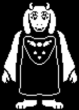
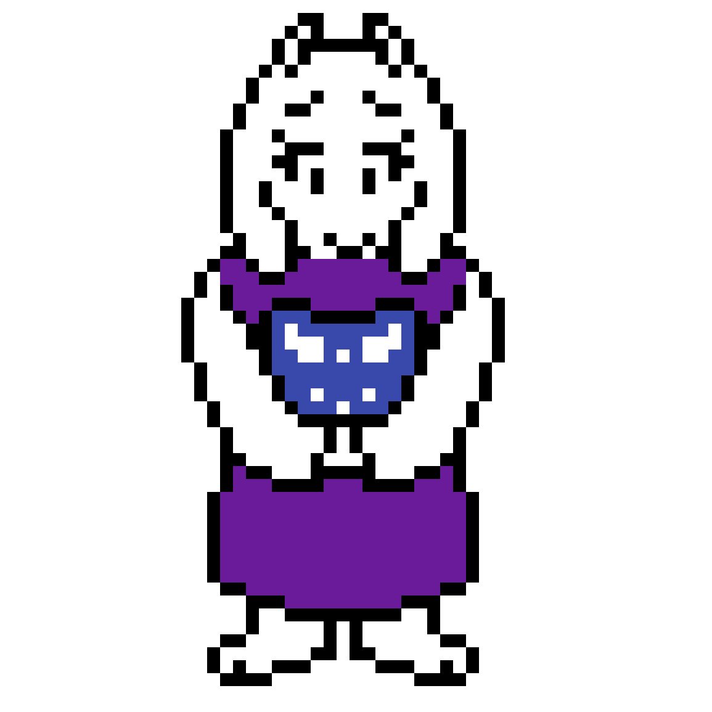
Toriel é uma das primeiras personagens importantes que o jogador encontra em Undertale e uma das figuras mais acolhedoras de todo o jogo. Ela é uma monstra gentil, bondosa e extremamente protetora, conhecida por seu aspecto maternal — algo que se reflete tanto em sua personalidade quanto em suas ações. Antiga rainha dos monstros, Toriel vive atualmente nas Ruínas, afastada do restante do subterrâneo e de seu ex-marido, Asgore. Sua escolha de viver isolada surgiu após discordar profundamente das decisões de Asgore sobre os humanos, o que a levou a abandonar o trono e se dedicar a proteger qualquer criança humana que caísse no subsolo. Quando encontra o protagonista, Toriel o acolhe sem hesitar, oferecendo comida, abrigo e ensinamentos básicos sobre como sobreviver no subterrâneo. Ela age como uma figura materna: paciente, cuidadosa e sempre preocupada com a segurança do protagonista. Ao mesmo tempo, seu carinho excessivo pode se transformar em superproteção, refletindo seu medo profundo de perder mais alguém. Essa dualidade torna Toriel uma personagem complexa e emocionalmente marcante, cujo papel inicial molda o tom emocional de grande parte da história de Undertale.
Sans é um dos personagens mais icônicos e misteriosos de Undertale. Ele é um esqueleto descontraído, conhecido por seu humor preguiçoso, piadas de trocadilho e uma atitude aparentemente relaxada — sempre visto fazendo piada ou tirando cochilos, independentemente da situação. No entanto, por trás desse comportamento brincalhão, Sans esconde uma profundidade surpreendente. Ele vive em Snowdin junto de seu irmão mais novo, Papyrus, e embora pareça não levar nada a sério, Sans demonstra ter um conhecimento incomum sobre o funcionamento do mundo, incluindo temas como timelines, resets e decisões do jogador. É um dos poucos personagens que parecem perceber quando algo está errado ou fora do comum, o que dá a ele um ar enigmático e quase onisciente. Apesar de sua preguiça, Sans tem um lado extremamente protetor — especialmente em relação ao seu irmão e aos habitantes do subterrâneo. Ele raramente demonstra raiva, mas quando seus limites são ultrapassados, revela uma força impressionante e uma seriedade que contrasta completamente com seu comportamento habitual. Essa mistura de humor, mistério e profundidade emocional faz de Sans um dos personagens mais memoráveis de Undertale, cuja presença marca profundamente cada rota do jogo.
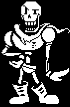 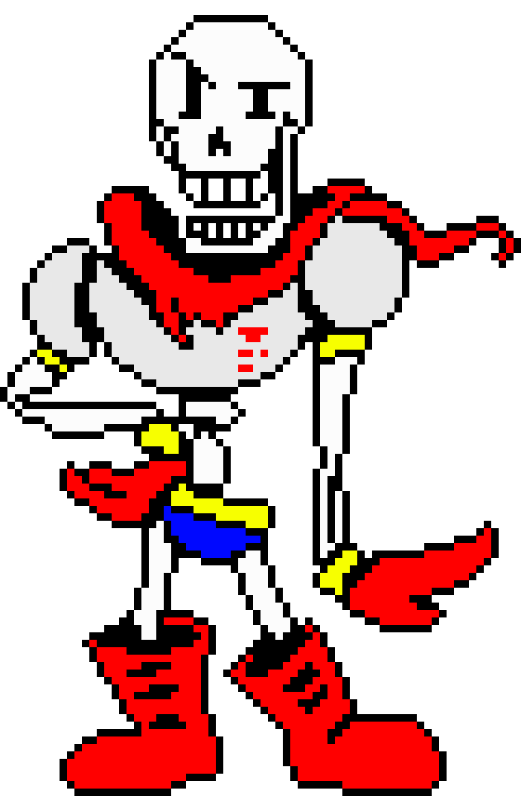 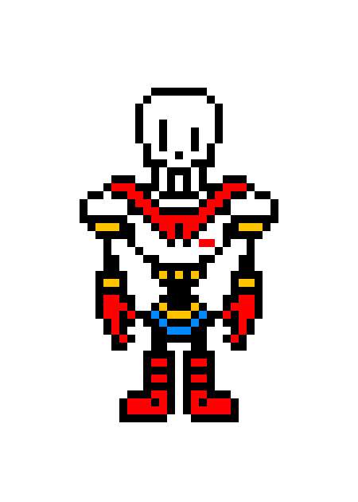
Papyrus é um dos personagens mais carismáticos e energéticos de Undertale. Ele é um esqueleto alto e entusiasmado, irmão de Sans, e possui uma personalidade marcada por confiança, inocência e um desejo enorme de ser reconhecido. Papyrus sonha em entrar para a Guarda Real, acreditando que capturar um humano será seu grande momento de glória — mas, ao mesmo tempo, ele tem um coração tão bondoso que não consegue realmente machucar ninguém. Ele vive em Snowdin junto de Sans e é responsável por criar armadilhas exageradas e puzzles elaborados, que quase nunca funcionam como planejado. Sua dedicação é genuína, mas suas ideias geralmente acabam sendo mais engraçadas do que ameaçadoras. A forma como Papyrus fala — sempre em CAPS LOCK — reflete sua energia transbordante e sua vontade de ser notado. Apesar de sua ambição, Papyrus é um personagem inocente e extremamente compassivo. Ele acredita no melhor das pessoas, sempre tenta incentivar os outros e enxerga amizade onde muitos veriam perigo. Sua gentileza e otimismo fazem dele um dos personagens mais puros do jogo, além de trazer leveza e humor à jornada. No geral, Papyrus é marcante pela combinação de determinação, bondade e humor involuntário, tornando-se uma figura inesquecível no universo de Undertale.
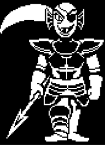 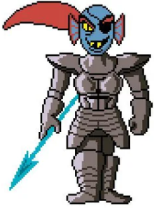 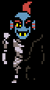
Undyne é uma das personagens mais fortes e determinadas de Undertale. Líder da Guarda Real, ela é uma guerreira formidável, respeitada e temida por sua coragem inabalável e sua dedicação em proteger o subterrâneo. Seu visual marcante — uma peixe-monstra com armadura pesada e um olhar feroz — combina com sua personalidade explosiva e intensa. Inicialmente, Undyne vê o protagonista como uma ameaça, perseguindo-o implacavelmente por acreditar que capturar humanos é essencial para o futuro dos monstros. Entretanto, por trás de sua postura agressiva, Undyne possui um senso de justiça muito forte. Ela luta não por crueldade, mas por lealdade ao seu povo e por acreditar que está fazendo o que é certo. Fora de combate, Undyne mostra outro lado: é barulhenta, engraçada e incrivelmente apaixonada por tudo o que faz. Tem uma amizade profunda — e um relacionamento romântico em potencial — com Alphys, além de treinar Papyrus e incentivá-lo a crescer. Ela adora batalhas, desafios e qualquer coisa que exija força e determinação, mas também valoriza vínculos e honestidade. Em essência, Undyne é uma personagem intensa, heroica e cheia de vida, cuja ferocidade esconde um coração dedicado e leal. Essa combinação faz dela uma das figuras mais inspiradoras e emblemáticas de Undertale.
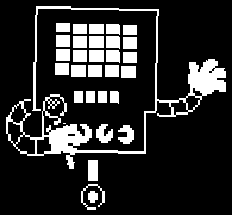 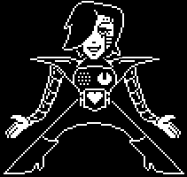 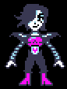
Mettaton é uma das figuras mais extravagantes e marcantes de Undertale. Ele é um robô-estrela do entretenimento criado por Alphys, sendo o único monstro famoso na televisão do subterrâneo. Carismático, dramático e sempre em busca de atenção, Mettaton vive para encantar o público — seja apresentando programas, cozinhando, entrevistando ou até encenando competições absurdas. Sua primeira forma, Mettaton EX, revela o verdadeiro propósito por trás de sua criação: um corpo projetado para performance, glamour e impacto visual. Com pose de diva, confiança exagerada e personalidade teatral, ele trata até mesmo confrontos como grandes espetáculos, transformando qualquer situação em um show. Por trás do brilho e do exagero, Mettaton tem profundidade emocional. Ele deseja ser amado, reconhecido e lembrado, não apenas como uma máquina, mas como alguém que realmente trouxe alegria ao subterrâneo. Seu relacionamento com Alphys também é significativo, pois ela é responsável por sua criação e por lhe dar a chance de expressar sua verdadeira identidade. No geral, Mettaton representa o lado glamouroso, caótico e divertido de Undertale, combinando humor, espetáculo e uma pitada de sensibilidade, o que o torna um dos personagens mais únicos e inesquecíveis do jogo.
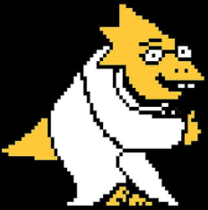 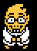
fbeõbbewvbewvbwçvwnvwçkjnvçwvkçwvkjwv
Alphys é a cientista real do subterrâneo em Undertale e uma das personagens mais humanas e complexas do jogo. Tímida, insegura e extremamente inteligente, ela é responsável por grande parte da tecnologia avançada presente no mundo dos monstros — incluindo a criação de Mettaton, seu maior sucesso (e também uma de suas maiores fontes de preocupação). Ela vive isolada em seu laboratório, lutando constantemente contra a própria ansiedade e a sensação de que nunca é boa o suficiente. Apesar disso, Alphys é brilhante e tem um coração enorme. Seu maior defeito é o hábito de mentir para evitar problemas ou confrontos, o que acaba gerando situações difíceis para ela e para aqueles que gosta. Alphys também é fã apaixonada de anime, mangá e ficção científica, o que influencia muito sua visão de mundo. Ela idealiza heróis, narrativas dramáticas e romances, e tenta aplicar esses conceitos na vida real — nem sempre com resultados positivos. Sua relação com Undyne é um dos aspectos mais marcantes de sua história, mostrando o quanto ela pode ser doce, dedicada e vulnerável. Por trás de sua timidez e nervosismo, Alphys é uma personagem profundamente sensível, talentosa e cheia de boas intenções. Seu arco envolve enfrentar seus próprios erros e aprender a ser honesta consigo mesma, tornando-a uma das figuras mais emocionais e realistas de todo o elenco de Undertale.
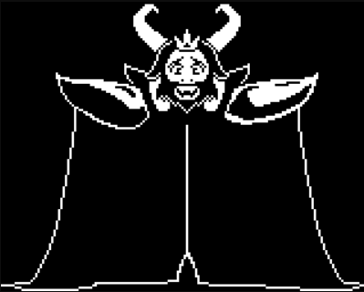 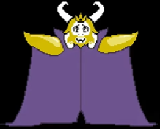 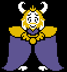
Asgore Dreemurr é o rei do subterrâneo em Undertale e uma das figuras mais trágicas e complexas do jogo. Apesar de sua aparência imponente — um monstro alto, forte e com chifres majestosos — Asgore possui uma personalidade incrivelmente gentil, calma e benevolente. Ele é um líder amado por seu povo, conhecido por sua bondade e pelo esforço constante em manter a paz e a esperança entre os monstros. No entanto, o passado de Asgore é marcado por profunda dor. Após a morte de seu filho, e posteriormente a morte de uma criança humana nas mãos dos monstros, ele tomou uma decisão drástica: declarar que qualquer humano que caísse no subterrâneo seria morto para que as almas necessárias fossem reunidas e os monstros finalmente pudessem quebrar a barreira que os aprisiona. Essa escolha não veio de crueldade, mas de desespero e sofrimento — e ele carrega um enorme peso emocional por isso. Vive sozinho no Castelo, cercado por flores douradas e um clima melancólico. Sua tristeza é perceptível em cada gesto, especialmente após a saída de Toriel, sua esposa, quem ele ainda ama profundamente. Apesar de seu papel como o grande desafio final da rota pacifista, Asgore não demonstra ódio; pelo contrário, ele trata o protagonista com respeito, lamentando o destino que sente ser obrigado a cumprir. Em essência, Asgore é um personagem que representa a dor, a responsabilidade e o peso das escolhas difíceis. Sua bondade, em contraste com suas ações forçadas pelas circunstâncias, torna-o um dos personagens mais emocionais e trágicos de Undertale.
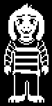 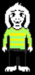 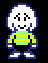
Asriel Dreemurr é um dos personagens mais emocionais e fundamentais de Undertale. Filho de Asgore e Toriel, ele era uma criança doce, gentil e carinhosa, amado por todos no subterrâneo. Sua amizade com a primeira criança humana que caiu ali marcou profundamente sua vida — uma relação inocente e cheia de afeto, que acabou levando ao evento mais trágico da história dos monstros. Após a morte da criança, Asriel tentou realizar seu último desejo e levou seu corpo humano de volta à superfície. Isso desencadeou um mal-entendido fatal, que o deixou mortalmente ferido. Mesmo assim, ele se recusou a atacar os humanos, demonstrando sua pureza e compaixão até o fim. Sua morte levou ao surgimento do desespero que mudou todo o destino do subterrâneo. Quando o jogador o reencontra mais tarde, ele está transformado em Flowey — um ser sem alma, incapaz de sentir amor ou empatia. Sob essa forma, Asriel vive em um ciclo vazio e cruel, tentando preencher o vazio emocional que o consome. No entanto, no confronto final da rota pacifista, Asriel recupera sua verdadeira forma e seus sentimentos, revelando toda a dor, solidão e saudade que carregava desde sua morte. No fundo, Asriel é apenas uma criança que queria ser amada e não machucar ninguém. Sua história é uma das mais tocantes do jogo, refletindo temas de perda, perdão e redenção. Ao aceitar seus erros e deixar o jogador ir, ele finalmente encontra paz — e confirma o papel central que sempre teve na narrativa emocional de Undertale.